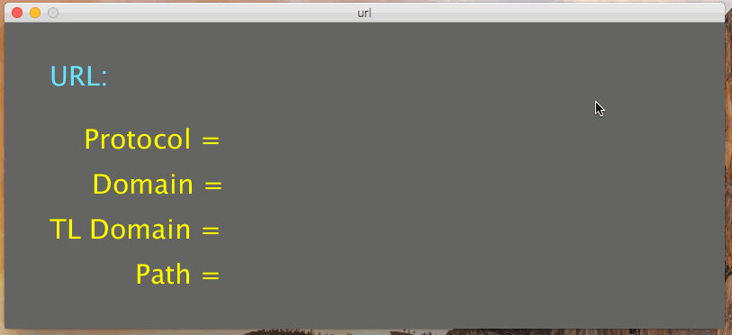
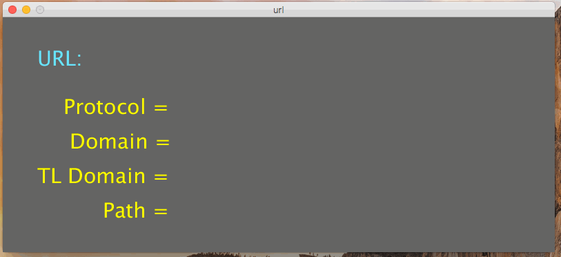
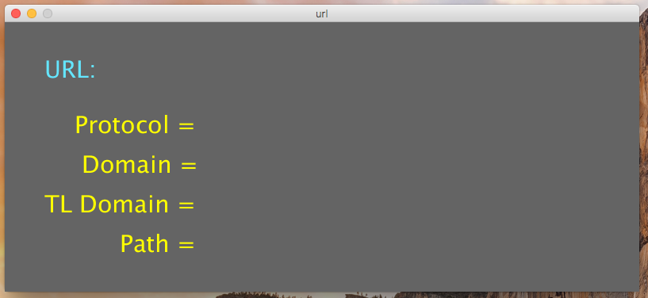
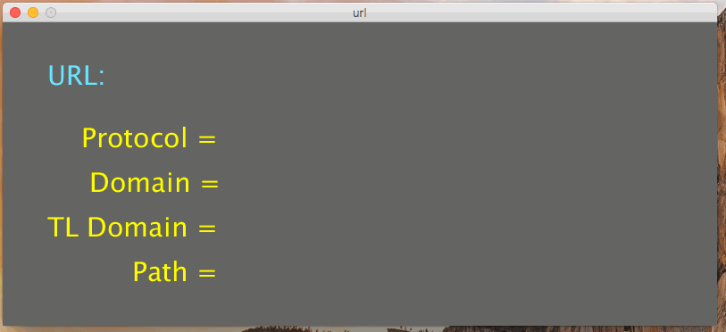

In this assignment, you will write a processing program named url.pde that extracts the various components of a URL.
Your program will allow the user to type in a web URL.
Once they have types on in, they can hi the enter key (\n) to see the components extracted.
Below is an example of the program working with a sample URL:

Notice a few things:
URL: text and the URL sub-components is different.
You don’t need to choose the same colors, but you should choose different ones that are easily readable against the background.URL: label.Your program should use Strings and various string methods to “extract” the parts of the URL.
In particular, you’ll want to use String.indexOf(), String.substring(), and string concatenation.
Review the class slides if you don’t understand these well!
In terms of extracting the components, recall:
:// in the URL..com, .net, etc) begins..com/.net/.org/etc part of the URL.
For the purposes of this assignment, you can assume that the top-level domain will always be either .com, .net or .org.When a valid URL is typed in, your program should be able to extract all of the components. However, what if a user types in garbage?
Your program must handle this, to a small degree. Before you try to extract the components, you program should check:
://?.com nor .net, .org?If either of these are true, it should display INVALID URL in red instead of the extracted components.
For example:

These are some examples of good URLs:
http://google.com/docs/index.htmlhttp://www.web.net/a/b/c/xhttp://benjdd.com/index.htmlhttp://www.arizona.orgSome invalid URLS (which your program should be able to determine are bad) are:
arizona.org/index.htmlhttp://google.io/hellothese are some words!http://hello.something.other.index.htmlI recommend beginning by getting all of the labels up on the screen, with the correct colors. Don’t implement the code to let the user actually enter in text yet.

Then, modify the code so that the user can enter in some text, and hit enter to clear it:

Now, add code to check if the URL is invalid, using the rules described earlier.
Lastly, modify the code so that it correctly extracts all of the URL components.
This program is due on Friday, March 30th at 5:00pm. Turn in the one processing code file to the D2L dropbox.